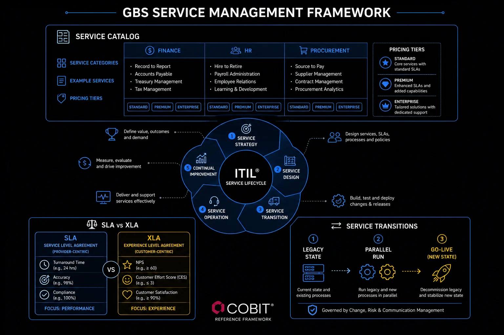

Service Management How GBS structures, delivers, and improves services — systematically.
You do not need to become an ITIL expert to work in GBS. But understanding what these frameworks do — and why the terminology appears in your organization — makes you a more effective professional and a more credible stakeholder.
Sound familiar?
The Service Catalog — what your GBS actually offers, written down
The service catalog is the published list of what GBS delivers, for whom, with what commitments. No catalog, no demand control. The model is in THE FIX.
"Do you also do this?"
Nobody can check.
 A
AA stakeholder asks Amara’s team to take over a reconciliation.
Her colleague says yes. Her team lead says it was never in scope.
Nobody can point at a list.
"Where is it written what we actually do?"
She feels lost in a debate with no reference point.
Without a written offer, every request looks legitimate — and every no looks like unwillingness.
A catalog turns scope from opinion into reference. Three parts per service.
Amara checks the catalog before promising anything new. Scope conversations turn from argument into lookup.
The service catalog in depth
A service catalog is the published list of everything your GBS delivers — each service, who it serves, and what it commits to. Without one, the business cannot see what it is paying for, and the GBS struggles to manage demand or demonstrate its value. The catalog is where service management starts, before any framework.
Most teams can describe their work in conversation but have never written it down in a form a customer can read. A catalog closes that gap. It turns "we do AP" into a clear set of named services, each with an owner, a scope, and a commitment. Building one forces useful conversations about what is genuinely in scope and what quietly became someone else's expectation over the years.
- Service name. A clear, consistent label the business will recognize and use when requesting it.
- Plain-language description. What the service does, in words a non-specialist understands — no internal jargon.
- Customer. Who the service is for — the business units, regions, or roles that consume it.
- Scope (in and out). What the service explicitly covers, and what it does not. The "out" list prevents most scope disputes.
- Owner. The named person or role accountable for delivery and for the entry being kept current.
- Inputs required. What the customer must provide for the service to run — the data, approvals, or documents the team depends on.
- Request channel. How the service is requested — the ticket type, catalog item, or mailbox that starts the work.
- SLA committed. The service level the entry promises — turnaround, accuracy, or availability — so expectations are set before the work begins.
One worked entry — every field a customer needs to understand and request the service
Find your team’s service catalog entry. No entry? Draft your three services, one line each.
A catalog is the offer. Frameworks are how the offer gets run.
ITIL and COBIT — what they are and why GBS professionals encounter them
ITIL tells you how to run services well; COBIT how to govern them. Both surface as centers mature. The model is in THE FIX.
Two acronyms in every meeting.
Nobody explains either.
 R
RA transformation call. "We align to ITIL." Nods.
"COBIT controls apply." More nods.
Ravi writes both words down to look up later.
"Does everyone know this except me?"
Almost nobody does. He feels behind.
You nod along at framework names and miss what they decide about your daily work.
Two frameworks, two different questions.
On the next call, Ravi asks which ITIL practice the new process maps to. The room notices.
ITIL and COBIT in depth
Two frameworks, two different purposes. One tells you how to deliver services well. The other tells you how to govern them responsibly. Both show up in GBS environments, especially as centers mature.
Information Technology Infrastructure Library
- What it does: provides a framework of best practices for designing, delivering, and improving services — originally IT, now extended to broader business services including GBS
- Core idea: services exist to create value for customers. ITIL gives you a language and structure for managing every part of that service lifecycle
- In GBS: ITIL concepts show up in service desk management, incident handling, change management processes, and how service transitions are structured
- ITIL 4 shift: moved from a rigid 26-process checklist to a flexible set of 34 practices — emphasizing outcomes and value over process compliance
- Certification relevance: ITIL Foundation is a common credential for GBS professionals in IT-adjacent or shared services roles
Control Objectives for Information and Related Technologies
- What it does: provides a governance and management framework for enterprise IT — ensuring IT decisions align with business objectives and are properly controlled
- Core idea: IT governance is about accountability, decision rights, and ensuring information and technology create value without unacceptable risk
- In GBS: COBIT is the framework your internal audit and compliance teams reference when reviewing GBS controls. It defines what "good governance" looks like at the system and data level
- COBIT 2019 update: introduced design factors — allowing organizations to tailor the framework to their size, risk profile, and strategic priorities
- Who uses it: CIOs, IT auditors, compliance managers, and increasingly GBS governance leads
ITIL service lifecycle — strategy through continual improvement
Look up which framework your center references. Read the one-page overview, nothing more.
ITIL sounds abstract. You already run parts of it.

GBS service management framework: service catalog, ITIL lifecycle, SLA vs XLA, and transitions
ITIL 4 — the key practices GBS professionals actually use
ITIL 4 defines 34 practices; six matter daily in GBS. You likely run three already, unnamed. The model is in THE FIX.
You already run ITIL practices.
You just never got credit.
 K
KKlaudia restores a broken feed, logs the workaround, requests an access change.
A consultant maps the team’s work: "strong incident and change discipline."
"We have been doing ITIL all along?"
Named, her routine becomes a qualification. She feels validated.
Doing the practice without the vocabulary means others define your maturity for you.
Six practices carry most GBS days. Three of them are probably yours.
Her CV gains three framework terms that were already true.
The six key ITIL practices in depth
ITIL 4 defines 34 management practices. You do not need to know all of them. These six show up regularly in GBS environments and are worth understanding by name.
Handling things that break
Structured process for restoring normal service as quickly as possible when something goes wrong. In GBS: system outages, failed payment runs, data feed interruptions. Focuses on speed of recovery, not root cause analysis.
Finding out why things broke
Identifies the root cause of recurring incidents and prevents recurrence. In GBS: if the same AP processing error keeps surfacing every month-end, problem management finds and fixes the underlying cause — not just the symptoms.
Managing planned changes safely
Structured process for assessing, approving, and implementing changes to services or systems. Prevents poorly managed changes from causing incidents. In GBS: system upgrades, process redesigns, new automation deployment.
Handling what users ask for
Processes routine requests from service recipients — access to systems, standard reports, queries about service status. In GBS: the majority of interactions with business units are service requests, not incidents.
Making SLAs work in practice
Ensuring SLA targets are defined, measured, reported, and reviewed. This is the practice that connects what was agreed in the SLA document to the actual data being tracked and discussed in service reviews.
Building a culture of getting better
Structured approach to identifying and implementing improvements at every level. In GBS: underpins CI programs, Kaizen culture, and how improvement initiatives are captured, prioritized, and tracked to completion.
- ITIL is a vocabulary, not a rulebook. When a colleague says "we need to raise an incident" or "this should go through change management," they are using ITIL language. You do not need a certification to understand what they mean — or to participate meaningfully in the conversation. This cluster gives you that vocabulary.
- COBIT matters most when auditors are in the building. For most GBS practitioners, COBIT surfaces during internal audits, SOX reviews, or governance assessments. Understanding that it exists and what it covers — IT governance, control objectives, accountability — is enough to be credible when these conversations happen.
- ITIL Foundation certification is worth considering if you are in a role that intersects with IT service management, shared services operations, or GBS governance. It is widely recognized and takes 2–3 days of preparation. Not essential for every GBS role — but meaningful for those moving toward operations leadership.
Service catalog — the menu of what GBS delivers
Name which ITIL practices your weekly tasks map to. Add the true ones to your skills list.
Practices keep steady state steady. Transitions are where it gets dangerous.
Managing service transitionsService transition — the structured process of migrating a process or service from the business or a previous provider into GBS operations, while maintaining service quality throughout. — the most dangerous phase in GBS
Transitions are the most dangerous phase in GBS — quality must hold while ownership moves. Structure is the protection. The model is in THE FIX.
The work is moving to you.
The risk moves first.
 P
PA new process lands in Priya’s team in six weeks.
The sending team is checked out. Documentation is thin. Stakeholders are watching.
"If quality dips even one week, they will say the move failed."
She feels pressured — and she is right to.
You treat the go-live date as the finish line. It is the highest-risk moment.
Transitions survive on structure, not enthusiasm. Three phases, each with a job.
Priya moves services between teams without dropping a ticket — because the structure catches what enthusiasm misses.
Service transitions in depth — the full phase model
A service transition is when GBS takes on a process that was previously run somewhere else. The migration window is when the most things go wrong — and when the service relationship is most fragile.
Understand before you commit
Document the current-state process in full — volumes, exceptions, system dependencies, key contacts, seasonal peaks, and hidden complexities the current team has absorbed over years. The documentation gap is usually larger than expected.
Build the target operating model
Define how the process will run in GBS — standardized, potentially redesigned, mapped to GBS systems.
- Create the SOP and initial DTP
- Define the KPIs and SLA targets
- Agree the governance structure with the business
Train, test, and prepare
This phase is frequently compressed under time pressure — and that compression is the primary cause of post-go-live instability.
- Train the GBS team on the new process
- Conduct parallel runs or dry-run processing
- Test system integrations
- Establish escalation paths with the business
Day one — controlled handover
Transfer operational responsibility from the previous team to GBS. Hypercare period begins: daily tracking, rapid escalation, senior oversight. Expect volume spikes, exception surges, and stakeholder anxiety — plan for all three explicitly.
3–18 months to BAU
Resolve issues, close knowledge gaps, normalize volumes, and build team confidence. SLA targets may be relaxed during this window — formalize what "full service" looks like and when the stabilization period officially ends. Transition is not over until metrics are consistently meeting BAU targets.
Under-investment in the build phase. Organizations compress training timelines, skip parallel runs, and go live before the team is ready (because the pressure to close the old operation is stronger than the desire to set the new one up correctly). The result is 6–12 months of stabilization problems that a well-resourced 3-month build phase would have avoided. Change management (helping the business trust the new setup) is not optional and cannot be accelerated past a certain point.
- Daily KPI review: volume processed, backlog age, error rate — reviewed every day, not every week, until trends are stable
- Named escalation owner on both sides: GBS and the business each have a named senior contact who can resolve issues within hours, not days
- Open issue log reviewed daily: every open item has an owner and a resolution date — nothing is allowed to sit unacknowledged
- Reduced batch sizes initially: process smaller volumes first, confirm accuracy, then scale — not the reverse
- Scheduled check-ins with the business: not just reactive — proactive updates even when things are going well, to build confidence
SLA vs XLA — measuring service vs experience
For your next handover, write acceptance criteria first. Three lines: done means what?
Services run well until they don’t. Cluster 3: making them better.
Strong KPI performance is never just about how hard a team works. What shapes the numbers:
- → Capacity vs workload — are you resourced for the volume you're actually receiving?
- → Process design and maturity — poorly designed processes cap performance regardless of effort
- → Upstream dependencies — what arrives late or wrong upstream becomes your problem downstream
- → Seasonality and systems — peaks, outages, and target definitions all move the number
Understanding that context is what turns KPIs from a ranking tool into a diagnostic one — identifying issues and driving action.
Here's what sets the consistently high-performing teams apart: they don't wait for the scorecard. KPIs are backward-looking by design, so the best teams build leading indicators and early warning signals into their rhythm — spotting problems before they hit the numbers, not after. Learn to read upstream signals early in your career. It's one of the highest-value habits you can build.
Key terms in this cluster
Full cross-pillar glossary at the GBS Insider Club Field Guide glossary.
- AXELOS — ITIL 4 Foundation Overview
- ISACA — COBIT 2019 Framework
- Alloy Software — COBIT vs ITIL: What are the Differences?
- Optro.ai — COBIT guide: Principles, enablers, and IT governance explained
- PDAConsulting — COBIT vs ITIL — Top 5 Key Differences Explained
- ITSM Docs — COBIT Trends 2024: Explore New Horizons in IT Governance
- ✓ ITIL vs COBIT — what each framework does and where GBS professionals encounter them
- ✓ Six key ITIL 4 practices — incident, problem, change, request, SLM, continual improvement
- ✓ Service transition stages — discovery through stabilization, with hypercare explained
- → Continuous Improvement — Lean, Six Sigma, DMAIC, the 8 wastes — Cluster 3
Want the full breakdown on video?
GBS service management covered in depth on the GBS Insider Club YouTube channel.
▶ Subscribe on YouTubeKnowing the frameworks is the entry ticket. Applying them — visibly, at your actual job — is what gets you promoted.
The GBS Insider Club Career Paths turn this theory into a guided 90-day program for your role: self-assessment, practical exercises, templates, and Julian's unfiltered practitioner playbook.
Explore the Career Paths → Back to Operational Excellence